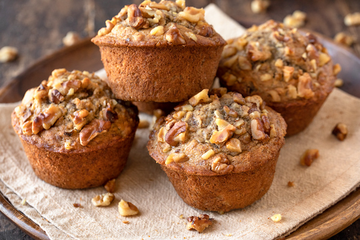

Best Banana Nut Muffins

Description
These Best Ever Banana Nut Muffins are the BEST banana muffins you'll ever make, with a delicious and sweet walnut topping!
Ingredients
- 4 large ripe bananas
- 3/4 cup brown sugar
- 1 large egg
- 1/3 cup vegetable oil
- 1 1/2 cups all purpose flour
- 1 teaspoon baking powder
- 1 teaspoon baking soda
- 1 teaspoon salt
- 1/2 teaspoon salt
- 1/2 teaspoon cinnamon
- 1 tablespoon of vanilla extract
- 1 cup chocolate chips
- 3/4 cups chopped walnuts
Steps
- Preheat your oven to 350 degrees Fahrenheit and prepare a 12-cup muffin tin with paper liners (or grease very well with butter or cooking spray if you prefer not to use paper liners).
- Mash the bananas in a large bowl and mix in the sugar and egg with a wooden spoon until well blended.
- Add the vegetable oil and mix well.
- Add the flour, baking powder, baking soda, salt, cinnamon and nutmeg, along with 3/4 cup of the chopped walnuts. Adding the walnuts with the dry ingredients helps prevent over-mixing.
- Mix everything together just until the flour disappears and the walnuts are distributed evenly throughout the batter.
- Spoon the muffin batter evenly into the 12 muffin cups
- Bake for about 20-23 minutes, or until the muffins are golden brown on top and a toothpick inserted into the center of one of the muffins comes out clean.
- Let the muffins cool in their tins for a few minutes before removing them to a wire rack to cool completely.
Nutrition Facts
Per Serving: 1 muffin | Calories: 306kcal | Carbohydrates: 36g | Protein: 4g | Fat: 17g | Saturated Fat: 6g | Cholesterol: 20mg | Sodium: 205mg | Potassium: 243mg | Fiber: 2g | Sugar: 19g | Vitamin A: 75IU | Vitamin C: 3.1mg | Calcium: 37mg | Iron: 1.4mg
Home